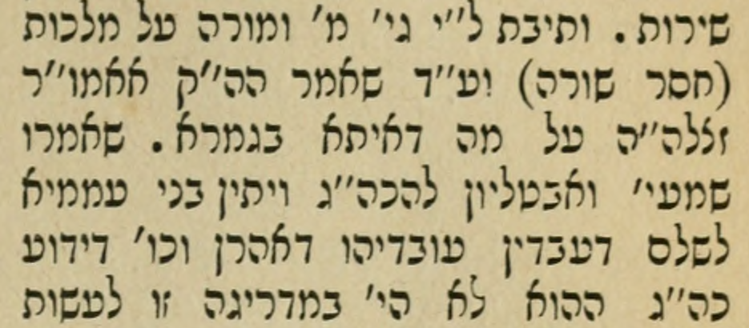

איך זה נראה

שירות. ותיבת נ"י גי' מ' ומורה ענ מנכות
(חסר שורה) וע"ד שאמר הה"ק אאמו"ר
זצלה"ה על מה דאיתא בגמרא. שאמרו
שמעי' ואבטליון להכה"ג ויתין בני עממיא
לשלם דעבדין עובדיהו דאהרן וכו' דידוע
כה"ג ההוא לא הי' במדריגה זו לעשות
שש שורות בדפוס רבני מתוך Sefer ehilat Mosheh (לובלין, 1906; נחלת הכלל), בסריקה של אוניברסיטת טורונטו עבור Internet Archive. לצידן הטקסט ש־HeOCR P-hist MEASURED v1.1 קרא, כמו שהוא, עם הטעויות.
המחשה, לא מדידה. העמוד אינו באף אחד ממערכי האימון, הפיתוח או המבחן שלנו. העמוד ב־Internet Archive · המודל
איך משתמשים ב־HeOCR
בלי קוד: אפליקציה למחשב
אפליקציה ל־macOS ול־Windows שקוראת מסמכים בעברית במחשב שלכם, בלי אינטרנט ובלי להעלות אותם לשום מקום. בפיתוח.
למפתחים ולחוקרים
התקינו את heocr מ־PyPI (pip install heocr), הורידו פעם אחת את ארבעת המודלים, וקראו קובצי PDF, קובצי Word וסריקות. אפשר גם להשתמש במודלים ישירות ב־Tesseract 5.
מודלים וצינור העיבוד
ארבעה מודלים של HeOCR לזיהוי תווים עם Tesseract 5, אחד לכל סוג של מסמך מודפס.
- מסמך מודפס מודרני, ללא ניקוד: HeOCR modern MEASURED v1.0 · Hugging Face Zenodo
- ספר, עיתון או חוק ישן, ללא ניקוד: HeOCR P-hist MEASURED v1.1 · Hugging Face Zenodo
- ספרות בדפוס, ללא ניקוד: HeOCR literature MEASURED v1.0 · Hugging Face Zenodo
- דפוס מנוקד: HeOCR pointed MEASURED v1.0 · Hugging Face Zenodo
מאגרי נתונים
הקטלוג נכון ל־2026-11-27. זכויות ותנאי שימוש מופיעים ליד כל גרסה.
27 מאגרים · 351,822 תמונות · 80,559,653 שורות · 493 עמודי מקור
תמונות ממסמכים אמיתיים
6 מאגרים
מאגרי טקסט
13 מאגרים
נתוני אימון סינתטיים ומשולבים ניסיוני
6 מאגרים
מאגרי הערכה
2 מאגרים
מקורות וקרדיט
הגרסאות משתמשות במקורות בנחלת הכלל או ברישיון פתוח. כל פריט שומר את המקור ואת הקרדיט שלו. זכויות והסרה.
הספרייה הלאומית
סריקות של ספרים בנחלת הכלל מהאוסף "נחלת הכלל, שימוש חופשי". כל פריט נושא את הקרדיט "מאוסף הספרייה הלאומית" (From the collections of the National Library of Israel), עם מספר הרשומה.
Internet Archive ו־Wikimedia Commons
סריקות של ספרים בנחלת הכלל שנעשו בידי ספריות אוניברסיטאיות, כמו אוניברסיטת טורונטו, ובידי Google עבור ספריות. כל פריט שומר את המזהה שלו, את זהות הסורק ואת ראיות הזכויות. דפי השער וסימני המים של Google מוסרים.
פרויקט בן־יהודה
טקסטים בנחלת הכלל שהקלידו מתנדבים, של אותן מהדורות. הם מספקים את הטקסט המדויק לכל שורה סרוקה, ואת טקסט האימון לעמודים סינתטיים.
ויקיטקסט העברי
טקסט מוויקיטקסט העברית מופיע במאגרי האימון ובזוגות השורות. בכל גרסה יש קישורים למקורות ותיעוד של תנאי CC BY-SA.
קוד
כלים
heocr
חבילת פייתון וכלי שורת פקודה: טקסט עברי מקובצי PDF, אופיס, דפי אינטרנט, סריקות וצילומים.
heocr-desktop
האפליקציות של HeOCR למק, לווינדוס ולאנדרואיד: טקסט עברי ממסמכים, בלי אינטרנט.
מודלים ונתונים
heocr-engine
המודלים: אימון ואריזה של מודלי זיהוי טקסט עברי.
htext
טקסט עברי בנחלת הכלל וברישיון פתוח, לאימון OCR בעברית.
hocrsyngen
מחולל נתונים סינתטיים לאימון זיהוי טקסט עברי: שורות ועמודים.
hdocsyngen
מחולל מסמכים סינתטיים בעברית: קובצי Office ו-PDF, עם מבנה מדויק.
בדיקה ותשתית
heocr-review
בודקים ומתקנים טקסט עברי מול סריקות של דפים, שורה אחר שורה.
heocr-compute
מריץ את עבודות האימון של HeOCR על מכונות שכורות: מידע פתוח בלבד, בתוך תקציב.
רוצים לעזור? פתחו issue או pull request באחד המאגרים.
אפליקציה למחשב
HeOCR ל־macOS ול־Windows נמצאת בפיתוח. כדי לדעת כשתצא, עקבו אחרי HeOCR/heocr-desktop ב־GitHub (Watch ← Custom ← Releases).